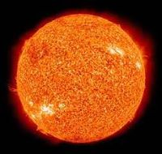

mars
Mars adalah planet terdekat keempat dari Matahari. Namanya diambil dari dewa perang Romawi, Mars. Planet ini sering dijuluki sebagai "planet merah" karena tampak dari jauh berwarna kemerah-kemerahan. Ini disebabkan oleh keberadaan besi(III) oksida di permukaan planet Mars.
View detailbumi
Bumi adalah planet ketiga dari Matahari yang merupakan planet terpadat dan terbesar kelima dari delapan planet dalam Tata Surya. Bumi juga merupakan planet terbesar dari empat planet kebumian di Tata Surya. Bumi terkadang disebut dengan dunia atau Planet Biru.Bumi terbentuk sekitar 4,54 miliar tahun yang lalu.
View detailjupiter
Jupiter atau Yupiter adalah planet terdekat kelima dari Matahari setelah Merkurius, Venus, Bumi, dan Mars. Planet ini juga merupakan planet terbesar di Tata Surya. Jupiter merupakan raksasa gas dengan massa seperseribu massa Matahari dan dua setengah kali jumlah massa semua planet lain di Tata Surya.
View detailmatahari
Matahari atau Surya adalah bintang di pusat tata surya. Bentuknya nyaris bulat dan terdiri dari plasma panas bercampur medan magnet. Diameternya sekitar 1.392.684 km, kira-kira 109 kali diameter Bumi, dan massanya (sekitar 2×1030 kilogram, 330.000 kali massa Bumi) mewakili kurang lebih 99,86 % massa total tata surya. Matahari merupakan benda langit terbesar di galaksi Bima Sakti yang besarnya bahkan 10 kali planet terbesar tata surya, Jupiter.